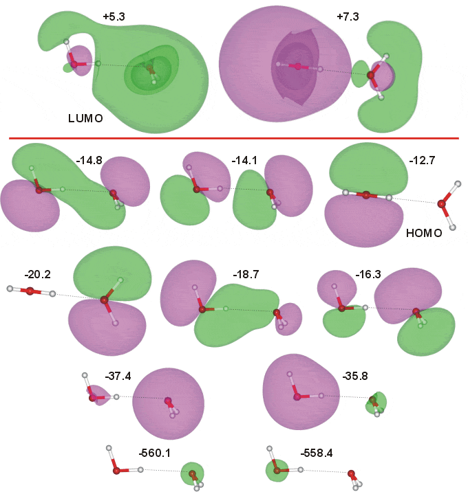
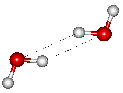

The water (gas-phase) dimer has CS symmetry molecular geometry. The occupied molecular orbitals were calculated using the Restricted Hartree-Fock wave function (RHF) using the 6-31G** basis set. The calculated energies are -560.1 eV (O-atom 1s proton acceptor), -558.4 eV (O-atom 1s proton donor), -37.4 eV (2a1 proton acceptor), -35.8 eV (2a1 proton donor), -20.2 eV (1b2 proton acceptor; 0/b2 -19.48 eV [1450]), -18.7 eV (major 1b2 proton donor, minor 3a1 proton acceptor; b2/a1 -17.98 eV [1450]), -16.3 eV (major 3a1 proton acceptor, minor 1b2 proton donor; (b2/a1)* -15.41 eV [1450]), -14.8 eV (3a1 proton donor,1b1 proton acceptor; a1/b1 -13.66 eV [1450]), -14.1 eV (3a1 proton donor,1b1 proton acceptor; (a1/b1)* -12.91 eV [1450]) and -12.7 eV (1b1 proton donor; b1/0 -11.41 eV [1450]), the HOMO. Two of the orbitals show overlap across the hydrogen bond, supporting the partial covalent nature of the hydrogen bond. However it has been calculated that the major donor to the minimum electron density across the bond is the HOMO-2 (-14.8 eV ) orbital with the HOMO-4 (-18.7 eV) contributing less than half as much [2804]. The two lowest unoccupied orbitals, including the LUMO, are also shown (contributed by the 4a1 atomic orbitals). The molecular orbitals of the two forms (CS and C1) proton-transferred dimers H3O+···OH− have also been calculated [1450].
The covalent-like character of the dimer with two overlapping orbitals (as above) is also shown by Density Functional Theory [2876].

At short distances (<2.66 Å, high pressures), the doubly-hydrogen-bonded C2h dimer (shown on the right) has been found to be more stable than the above CS dimer [1029]. This dimer is normally about 3 kJ ˣ mol−1 less stable than the CS dimer and is the transition structure for the interchange between the molecules being the hydrogen donor or acceptor [1462].
Interactive structures with orbitals are available (COW [Plug-in, ActiveX] only).
Home | Site Index | hydrogen-bonding | The water molecule | H3O2− molecular orbitals | H5O2+ molecular orbitals | cis-(H2O)5 molecular orbitals | LSBU | Top
This page was established in 2001 and last updated by Martin Chaplin on 5 August, 2021